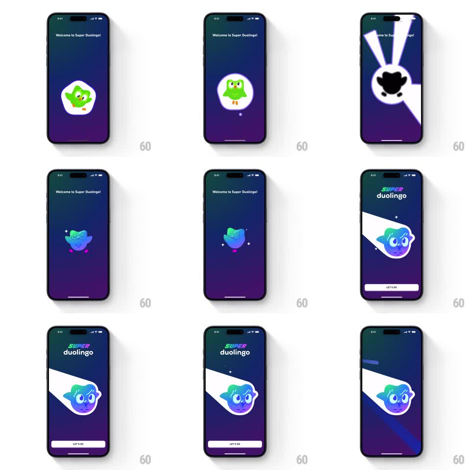

Media
Frame-by-frame

Rebuild this animation 1:1: Duolingo's "Welcome to Super" transformation - the standard green owl on a dark gradient stage gets struck by radiating light beams, flashes, and re-emerges as the iridescent cosmic "Super" mascot with sparkles, ending on the Super Duolingo lockup + CTA.

Rebuild this animation 1:1: Duolingo's "Welcome to Super" transformation - the standard green owl on a dark gradient stage gets struck by radiating light beams, flashes, and re-emerges as the iridescent cosmic "Super" mascot with sparkles, ending on the Super Duolingo lockup + CTA. ## Integration Integration: stack-agnostic spec - springs given as stiffness/damping, timed motions as duration + curve; map every value to your framework and animation library of choice. ## Scene Full-screen dark blue-purple gradient. Center stage: the mascot inside a soft blob. Header text "Welcome to Super Duolingo!" top-left. Final state adds the SUPER DUOLINGO wordmark top, a light-ray burst behind the transformed mascot, and a "LET'S GO" button. ## Motion spec Pattern: multi-stage transformation sequence, ~3.5s. - Idle intro: green owl breathes (scale 1 -> 1.03, 2s) for one beat. - Beam strike: 3-5 white light rays erupt from behind the mascot (scale from center, 300ms, staggered 60ms) and the screen flashes toward white at the center. - Transformation: the owl's silhouette flips to black, then color sweeps across it (iridescent green-violet gradient wipe, 500ms, top-down) - the mascot emerges with shimmer. - Sparkles orbit and twinkle around the new mascot (4-6 four-point stars, 1.5s, staggered). - Wordmark fades in top (200ms), light burst settles behind the mascot at low opacity, CTA slides up from the bottom (spring ~300/24, 350ms). ## Calibration - The flash + silhouette beat is the transformation's punch - do not skip the dark frame between old and new. - Iridescence keeps shimmering after the reveal (slow gradient shift, 4s loop). ## Reduced motion Crossfade from green mascot to Super mascot (400ms), no beams or flash. ## Don't miss - Rays emanate from behind the mascot's center, clipped by the stage. - The CTA only exists after the transformation completes.